Health - Predict Lab
Note
Please follow the Action statements to navigate the steps and perform the lab.
Health Overview
Now that one asset has been identified as creating multiple alerts, the Operations Manager asked the Reliability Manager to dig deeper into all of the similar pumps, to make sure that there aren't any failures predicted to occur before planned maintenance.
Maximo Health and Predict are targeted to the reliability engineer. Together, they provide a view of the current state of an enterprise's assets, and project future conditions of those assets.
Action: Select Health Application in the right corner and show grid view of assets in health.
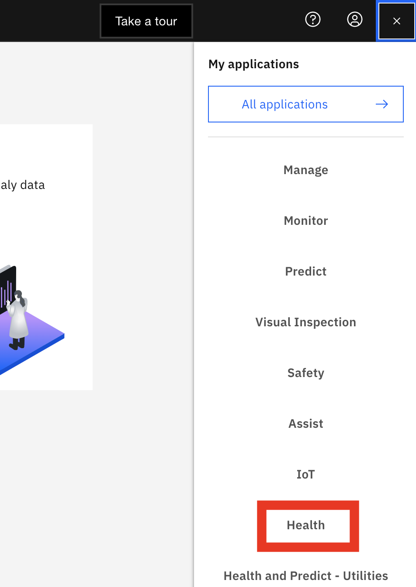
Value: Health and Predict arm the Reliability Engineer with AI-powered insights to take actions to extend the life of the assets, reduce maintenance cost, and eliminate unplanned downtime.
As the Reliability Engineer, I'll identify assets the need attention, investigate those assets, and finally take an action to avoid unplanned downtime.
Review Asset's Health
Action: From the main MAS screen, click on the Health tile to show grid view of assets in Maximo Health and Predict.
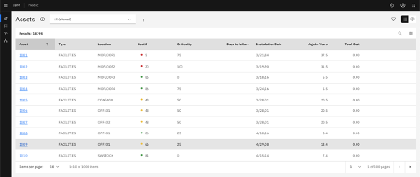
On the main screen, I can see a universal view of my managed assets in a familiar grid view.
Value: This is particularly valuable to me as the Reliability Engineer because I can see a mix of both IT data (from Manage) and OT data (from Monitor) together in a single view.
These assets are coming from Maximo Manage, but we can connect to other EAM systems.
Different views of our data can be generated to make it easier to identify our critical assets. On this grid, I can add and move columns, filter, search and sort.
Value: I've created a saved view to so that I don’t have to start over every time. This view includes a status column, filters on my pumps, and sorts them by OEM and non-OEM.
Action: Use the selection box to show your saved view(the “Pump” view in the demo may be different)
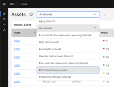
In this view, I can see two columns with calculated data.
• You can see Health scores, which are created within the Health application for groups of assets from the Scoring tab.
Action: Show Health Scores under health column and Scoring Tab on the left Tab view.
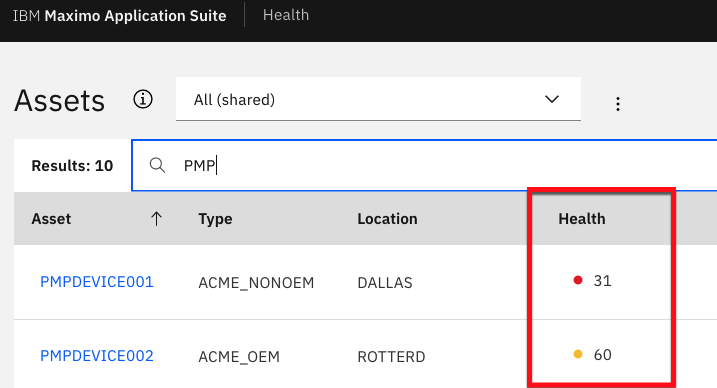
Value: Risk tolerance can vary among industries, asset types, and enterprises. I can define the scoring ranges specific to my tolerance levels. I can even assign my own colors.
• Similarly, information in the Days to Failure column comes from a predictive model from the Predict Grouping tab.
Action: Show Predict Grouping Tab on left Tab menu.
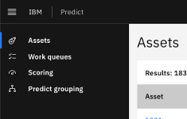
I can see that my pumps are in various states of health, but in general, my OEM pumps are in better health. Based on the information I’ve received from the ops manager, I suspect that my all of my non-OEM pumps are all have issues with their o-rings.
Action: Search pmpd and click Map icon.
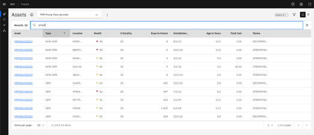
Note that by selecting the icon in the upper right of the screen, I can also see my selected assets on a map view, with similar information.
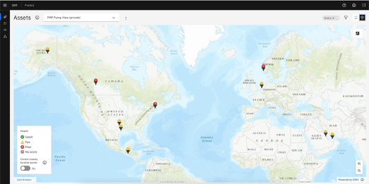
Value: Seeing how the assets are spatially distributed may assist the Reliability engineer with identify and investigating assets at risk. This is particularly true in the Utilities industry.
Work Queue
I’ll continue my investigation to determine which assets are expect to fail soon, but don’t have a maintenance plan to address the failure. I want to do those to avoid unplanned downtime, and be more proactive in my maintenance planning. The easiest way to do this is by using the work queue feature.
Action: Select Work queues tab on the Left Tab menu, and Show work queues.
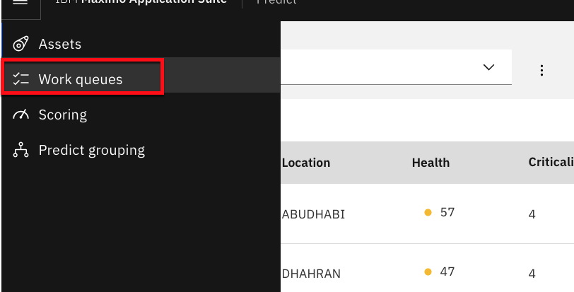
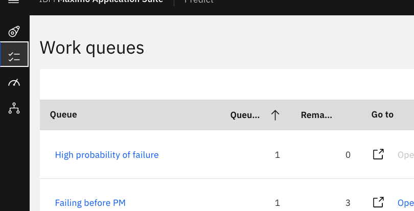
Work queues are preconfigured views designed to help you find what you're looking for...and to manage your day-to-day activities.
Value: These are particularly valuable to a Reliability Engineer who needs to address a specific problem, like a water treatment plant, trying to avoid unplanned downtime.
There are a number of work queues included with Health and Predict.
• There are work queues specific to Predict, like assets with a High Probability of Failure.
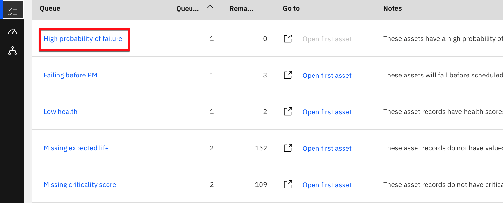
• There's also a work queue for identifying assets in poor health.
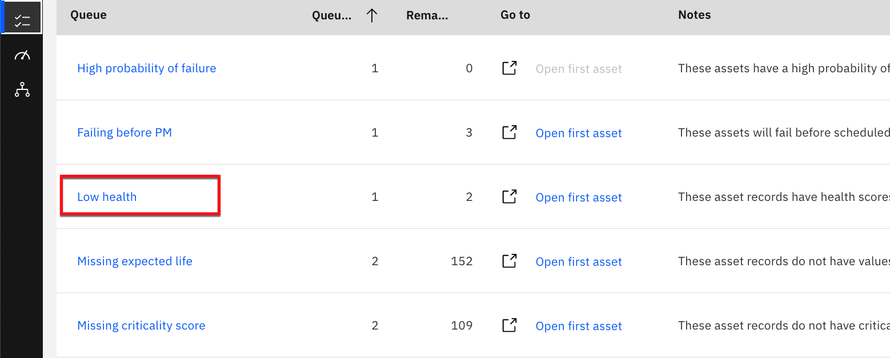
• And there are work queues that show assets with missing data.
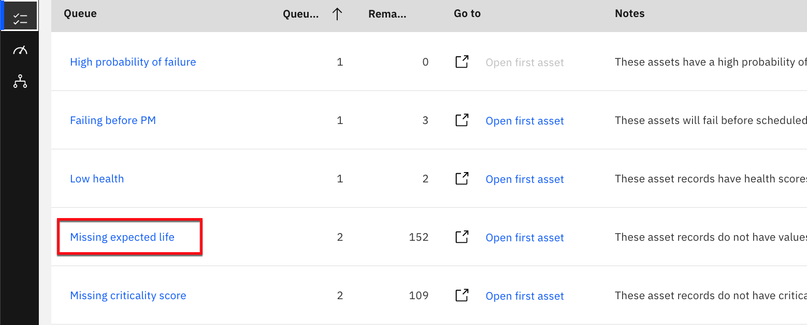
Value: The missing data Work Queues are extremely useful to a reliability engineer as they can help identify gaps in data necessary to create health scores or predictive failure model.
I'll select the Failing Before PM work queue to see all of the assets with scores in that work queue. As a Reliability Engineer at a Water treatment plant, it is critical for me to avoid pump failures.
Action: Select Failing before PM work queue.
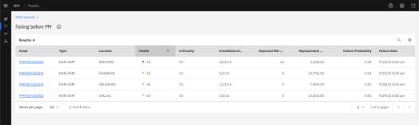
• In this work queue, we can see that there are 4 pumps that have a predicted failure before their next planned maintenance date, and they are all non-OEM pumps.
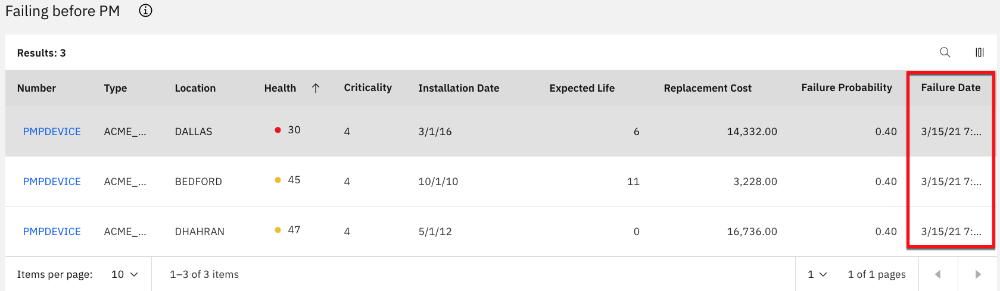
Note
Recorded in a previous date.
• We can see the pump here, the one with the bad o-ring that our technician discovered.
• I'll select a different pump in the queue as we start to manage our workload for the day, investigating and addressing all of the assets in the queue.
Action: Select pump 1 which opens the asset detail page [DETAILS ON THIS PAGE WILL VARY AS THIS IS A LIVE DEMO SYSTEM]
Health Score
Action: Show asset detail page.
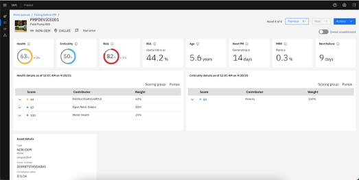
The asset detail page is an incredibly useful tool for investigating assets. We can find all the asset information presented on a single page, in easy-to-read tables, charts and graphs.
• On the top of the page, I see details about my asset, and KPIs that give me a snapshot of its current state.
• For this asset, we have a health score of xx, which is in our yellow zone. We can also see that it has dropped xx points since it was last calculated
Action: Show health score and small number next to health score at the top.
• This asset also has a criticality and risk score. These too can be calculated in a similar manner to the Health Score.
• We can see this asset has xx% of its expected remaining useful life, based on the install date and manufacturers recommended life.
Action: Show 'RUL' card at the top.
• We can see that our asset is projected to fail in the next x days, but our next maintenance isn't planned for x days.
Action: Show 'Next Failure' card and 'Next PM' card at the top.
• When we started our investigation, we knew the asset was expected to fail before its planned maintenance. But, just by looking at the KPIs, we have additional evidence that this asset is in trouble, and that some action needs to be taken
Below the KPI sections, we can see more information about our asset, which comes directly from our EAM system...in this case, Maximo Manage, also included with the Maximo Application Suite.
There's a breakdown of the health score drivers and factors that give us insight into what's causing its poor health.
Action: Scroll to health details and click the arrows to show metrics.
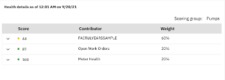
For this asset, and assets in the same group, we can see that the health score is a weighted average of open work orders, remaining useful life, and meter health.
Predict Overview
Action: Scroll down from asset Health into the Predictions Tab, and open the tab.
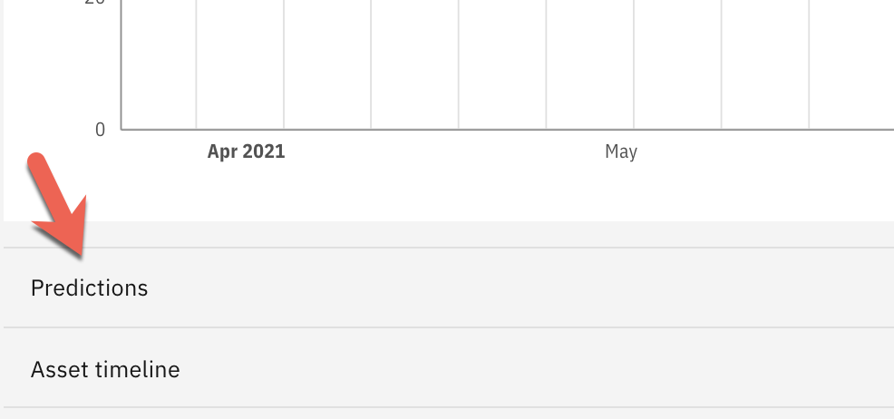
There are several predictive models built to score against incoming sensor data for our asset.
Value:IBM Predict includes templates to help our Data Scientist get started building models to project days to failure, calculate probability of failure, detect anomalies, and generate an asset life curve based on group asset deployment and retirement dates. These templates include a large number of algorithms and can automatically select the one that best fits our data for the optimal outcome.
Note that also included with the Maximo Application Suite is Watson Studio and Watson Machine Learning, both of which our Data Scientist can use for building, training, and maintaining predictive models.
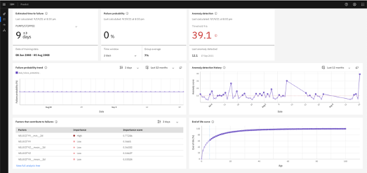
Predicted Failure Model
In the case of our asset, our model tells us that it is projected to fail in xx days...plus or minus xx days. Depending on the richness of our failure history, our Data Scientist can build predictive models for specific failure modes. And we can select those failure modes within the widget to see the projection for each.
Action: Select drop down arrow for failure mode.
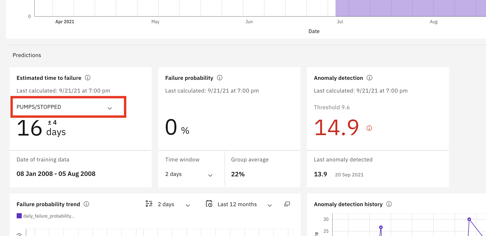
• Also in the widget, we get information about our training data in the widget to help us decide when a model should be retrained.
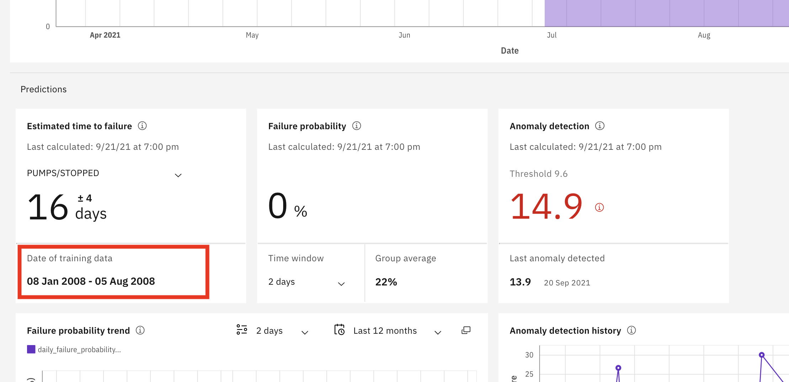
The Failure probability widget can show us how different failure modes impact our predictions. For example, it might show us our asset has a xx% probability of failure in the next xx months due to xx
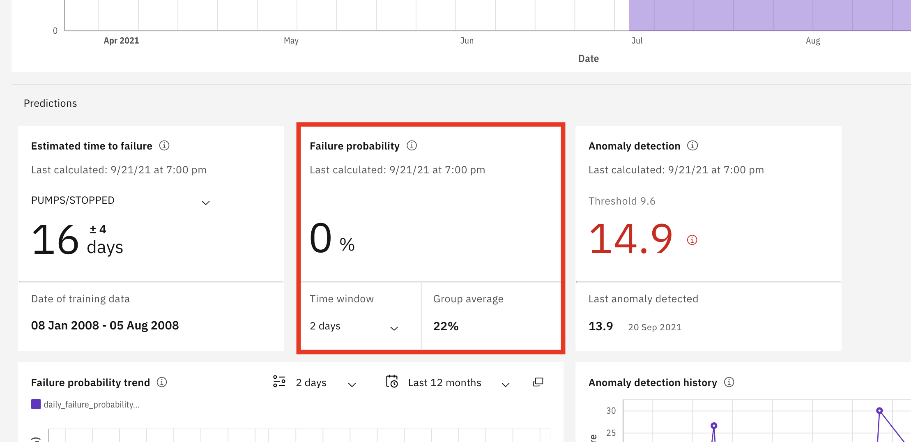
• Our Data Scientist can build specific models for time periods. And just like the failure modes, we can look at the results by making different selections within our widget.
• Failure probability history shows how the probability of failure for each mode has changed over time.
Action: Scroll to Failure probability trend card.

The factors that contribute to failure show which factors from our training data impacted failures the most, giving us an indication of what may lead to future failures.
Action: Scroll to Factors that contribute to failures card.
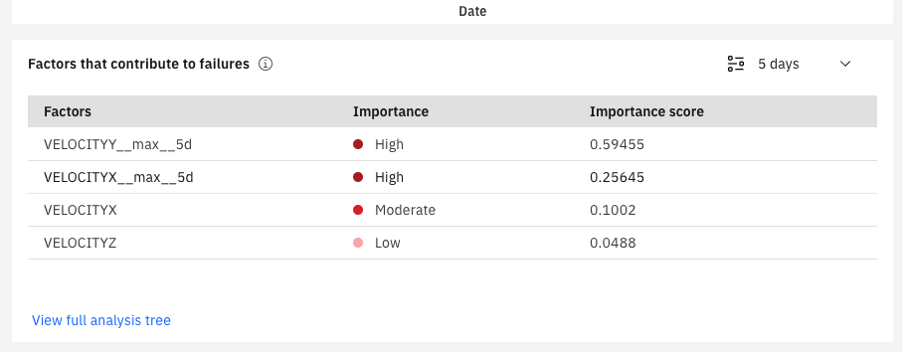
Our anomaly detection model creates a threshold based on history, and we can see when our asset exceeds that threshold in our widget.
Action: Scroll to Anomaly detection history card.
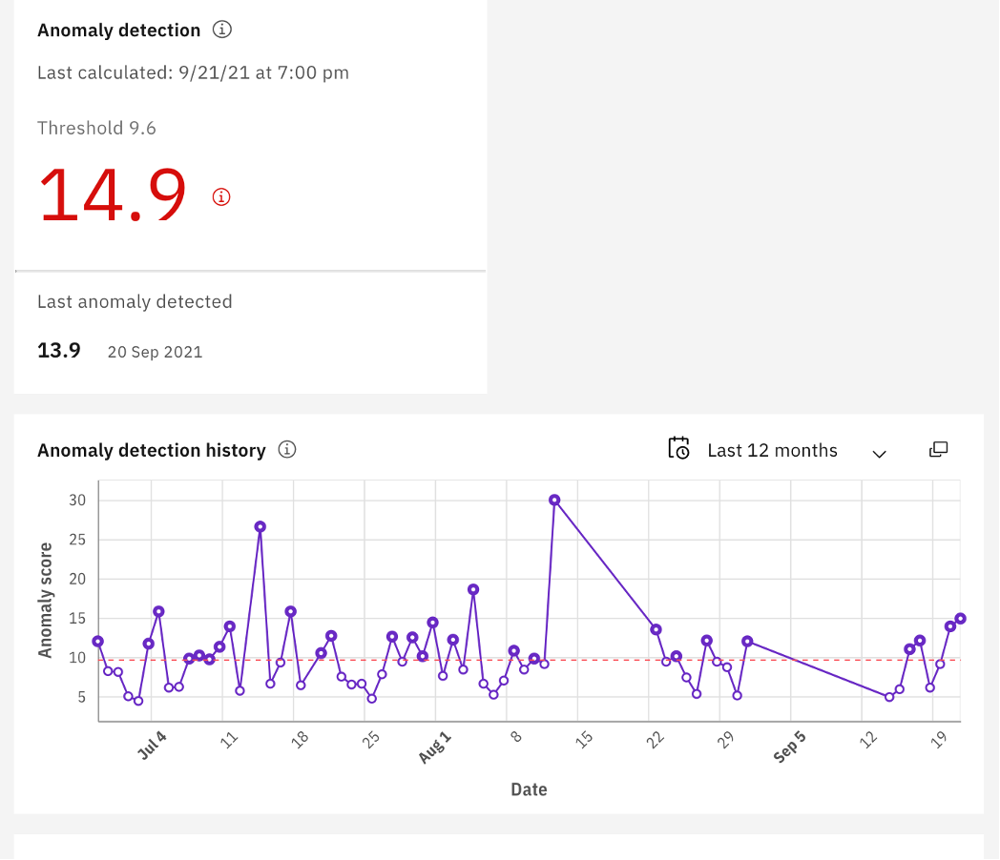
Asset Timeline
At the bottom of the page, is an asset timeline that shows us several pieces of key information about our asset in the same graph.
Action: Open Asset Timeline tab.

For example, we can see that I have a predicted failure (on the top line of the graph), that will occur before our next planned maintenance (on the second line of the graph).
Other information on the chart, like past work orders and inspection, provide valuable insight into our asset's history, and may support what kind of action we take.
Action: Hover over predicted failure.
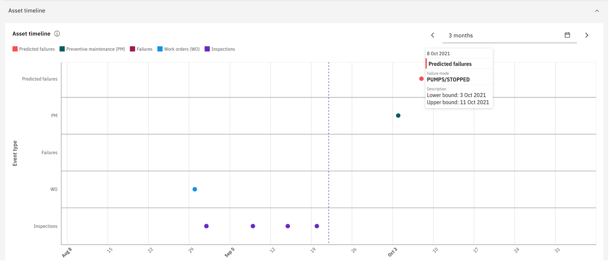
While each piece of information, or widget, gives us insight into the state of our asset, all of the information together, gives us a richer view, and helps us make a data-driven decision on how to address this asset.
Take Action
Once I decide what action to take, I can do it immediately from the top of the asset detail page.
Action: Scroll back to the top of the page and Select Action button in the right corner.
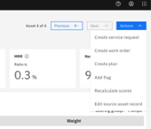
I can Create a service request, Create a work order, Recalculate a health score, or Edit source asset record.
In this case, I'll Edit the source asset record to adjust the next scheduled maintenance to avoid a potential failure...and unplanned downtime.
[FOR DEMO PURPOSE, WE ONLY TALK ABOUT THE STEP]
Once that’s done, I mark my asset addressed, and move to my next asset, confident that we'll avoid unplanned downtime at our water treatment plant.
[DO NOT LEAVE THIS CHECKED]

Replacing a low-dollar o-ring could save thousands of dollars in capital costs preventing the pump from failing by vibrations. I can also use this this type of information to ensure that we aren’t over maintaining their assets. And as we address all of the pumps in our work queue, we can reduce the alerts and SRs in Monitor. This information can also be valuable for capital planning purposes.